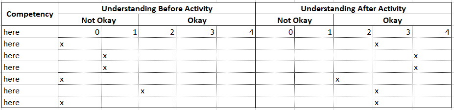

Post-Pre Survey Instrument [DRAFT]
Comparing Frequentist and Bayesian Approaches
Survey Design1
This survey is designed to gauge where you believe your understanding of different approaches in inferential statistics was before beginning the activity to where it is after completing the activity. The items in the survey ask you to consider where you think you were before the activity, followed by where you think you are now. You will give yourself two ratings to capture this before and after reflection.
STEPS:
- Think about how well you believe you understood inferential statistics approaches before the activity began.
- Give yourself a score based on Table 1 below to capture this understanding.
- Think about how well you believe you understand inferential statistics approaches after the completion of the activity.
- Give yourself a score based on Table 1 below to capture this understanding.
| Score | Meaning |
|---|---|
| 0 | not adequate |
| 1 | not really adequate, but almost okay |
| 2 | adequate, but just barely (still okay otherwise score it 0 or 1) |
| 3 | somewhere between minimally okay and excellent |
| 4 | excellent |
The Understanding Score Table looks like this graphically:
The following example survey has three parts: first and in the farthest left-hand column represents the type of change related to your competency in inferential statistics approaches. Competency refers to changes in knowledge, or what you know, as well as changes in skill level, or what you can do. The second and middle column indicates your understanding using Table 1 before you started the activity. You will put a check mark in whatever box best represents your understanding before you did the activity. The third and final column indicates your understanding using Table 1 after you completed the activity. You will put a check mark in whatever box best represents your understanding after you completed the activity. Recall the figure above, where scores of 0 and 1 capture an understanding that is “not okay” and scores of 2, 3, and 4 generally capture an okay understanding.

Please feel free to ask questions if you need clarification on what the survey is asking. Once you have completed the survey, please return it to your instructor. Thank you!